带货种草
耳机
正在连接在线视频…
视频简介
短发女主经过黑白调的喧闹路口，开盒戴上紫色耳塞，场景恢复色彩。她到临街柜台取饮，沿石墙花槽缓步前行。紫色鸢尾、发夹与耳机构成同色叙事，最后给产品定格。
在快手观看原视频 ↗制作资产
角色资产
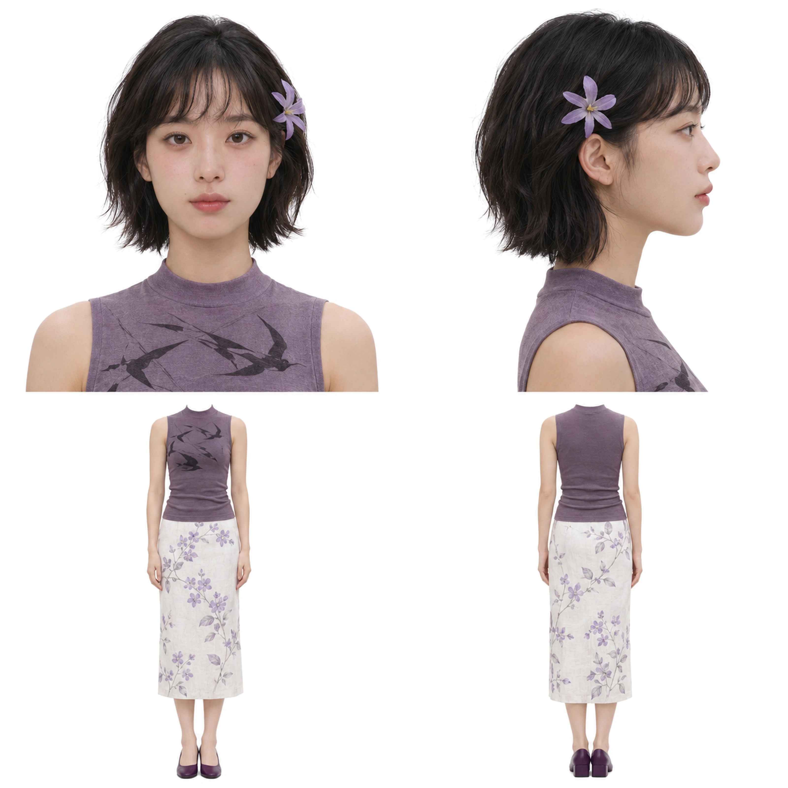
紫衣短发女主
在闹市戴上耳塞，继续在街角和饮品柜台漫步。 黑短发、紫无袖上衣、浅色花裙和紫色方跟鞋，佩戴发夹。 成片未完整展示的方位按可见造型补全。
蓝衣男路人
从女主左侧通过斑马线的行人。 浅蓝卷袖上衣、土黄色长裤，步幅明显。 成片未完整展示的方位按可见造型补全。
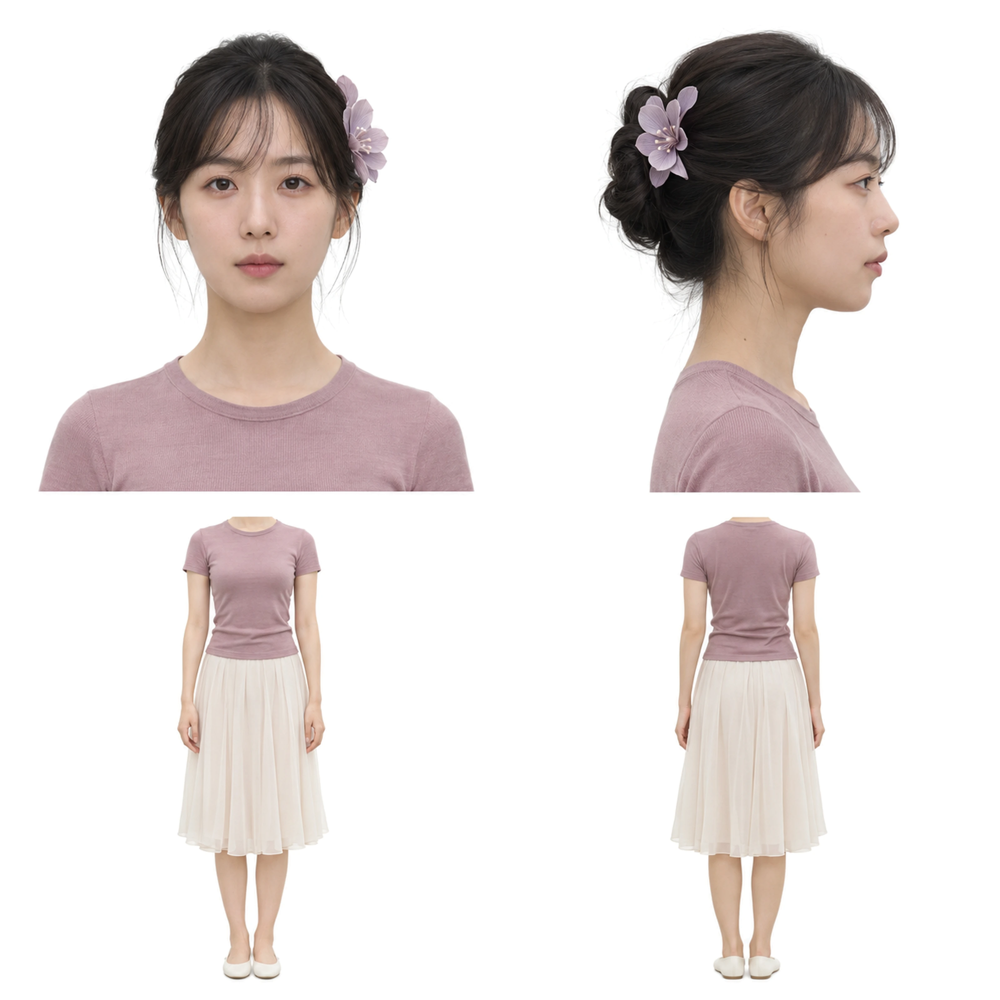
浅裙女路人
斑马线右侧穿过的行人。 淡紫上衣、米白轻薄中裙。 成片未完整展示的方位按可见造型补全。
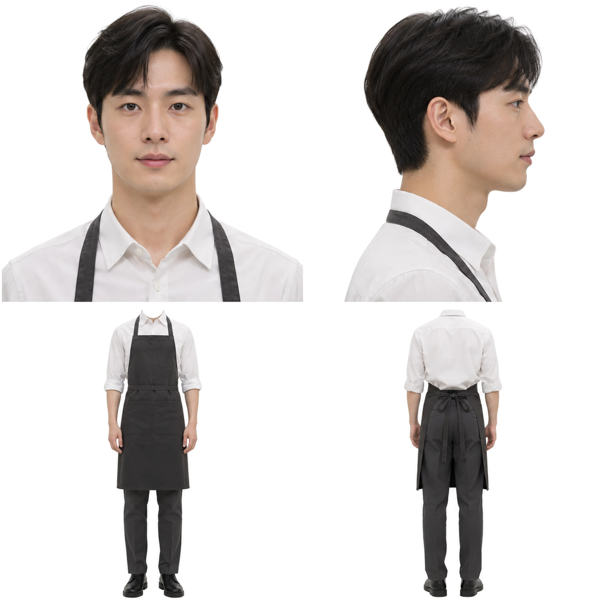
白衣柜台店员
柜台内递送饮品的店员。 白衫深围裙，动线为取杯、转身和交接。 成片未完整展示的方位按可见造型补全。
场景资产
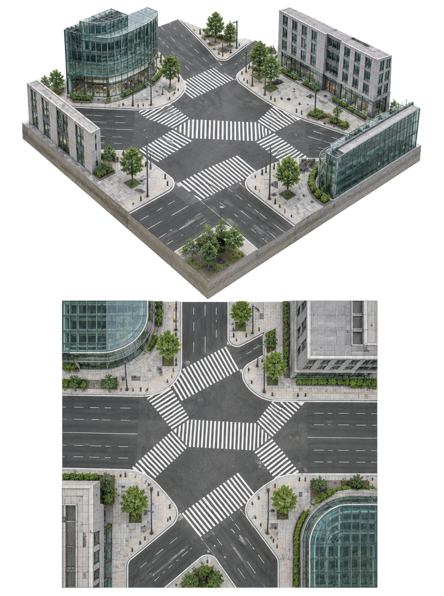
都市斑马线
都市斑马线的场景视觉设定，用于空间布局、光影与镜头背景。
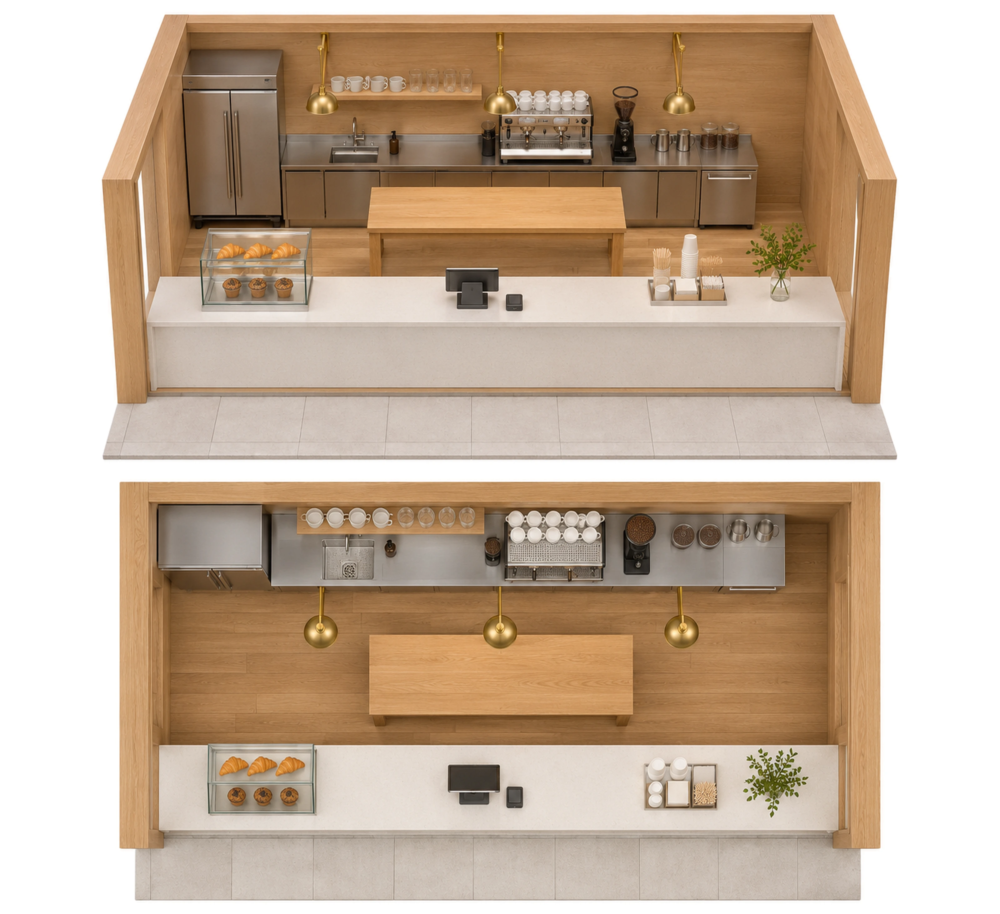
临街饮品柜台
临街饮品柜台的场景视觉设定，用于空间布局、光影与镜头背景。
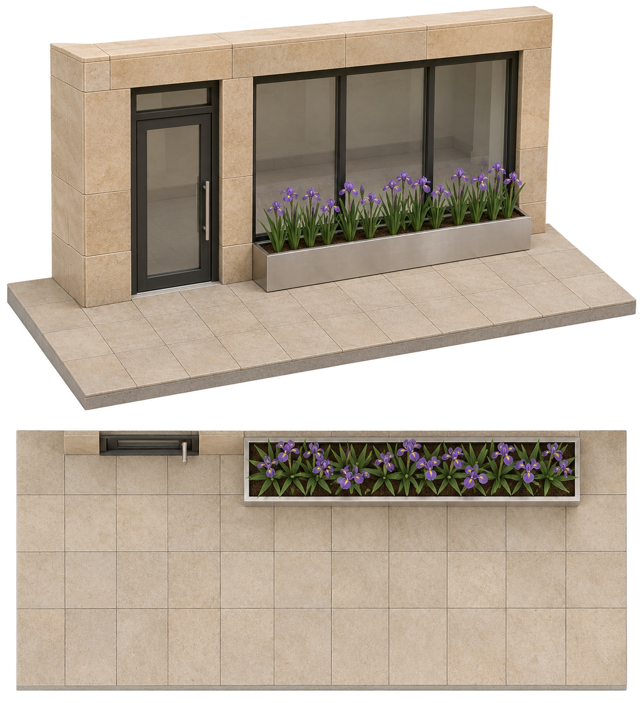
紫花石墙街角
紫花石墙街角的场景视觉设定，用于空间布局、光影与镜头背景。
道具资产
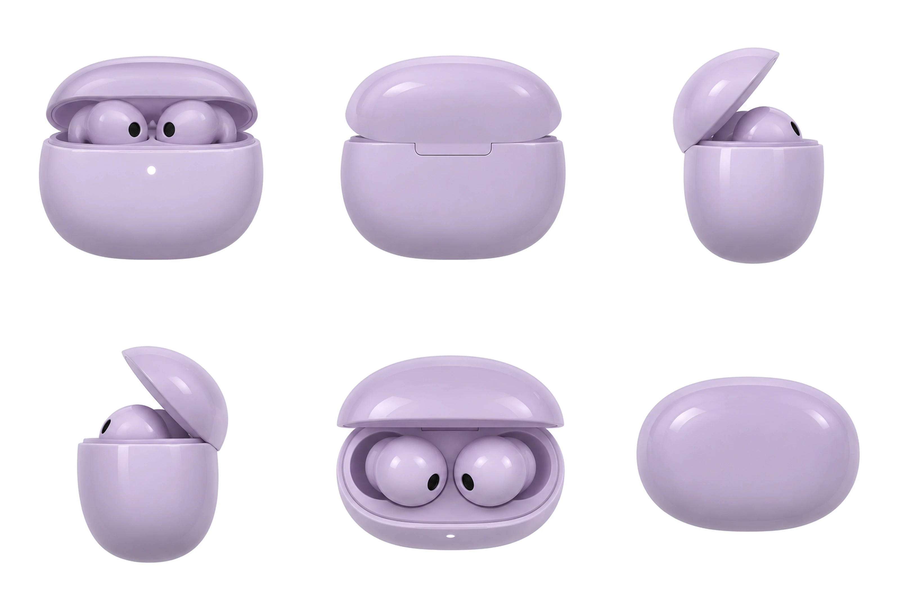
紫色耳机充电盒
淡紫椭圆盒，翻盖和双耳塞托槽，保留实物状态灯。 开盖露出两只耳塞，结尾以半开盒定格。 成片未完整展示的方位按可见造型补全。
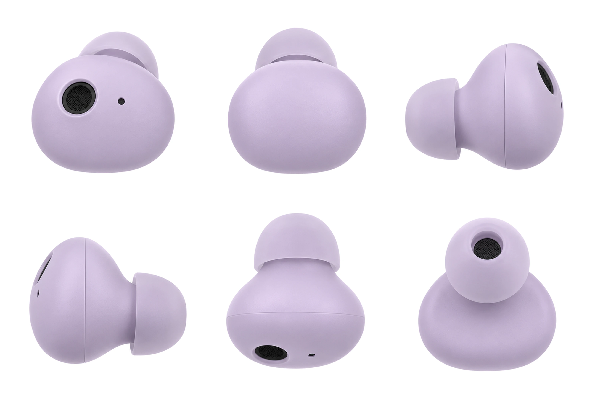
独立紫色耳塞
紫色圆润无线耳塞，黑色发声孔。 用于单独取出和戴入耳部的镜头。 成片未完整展示的方位按可见造型补全。
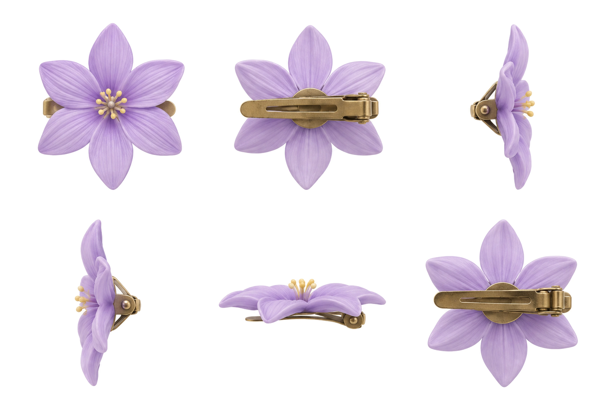
紫花发夹
浅紫花形夹，背部短弹簧卡。 女主鬓角识别，与路边紫花呼应。 成片未完整展示的方位按可见造型补全。
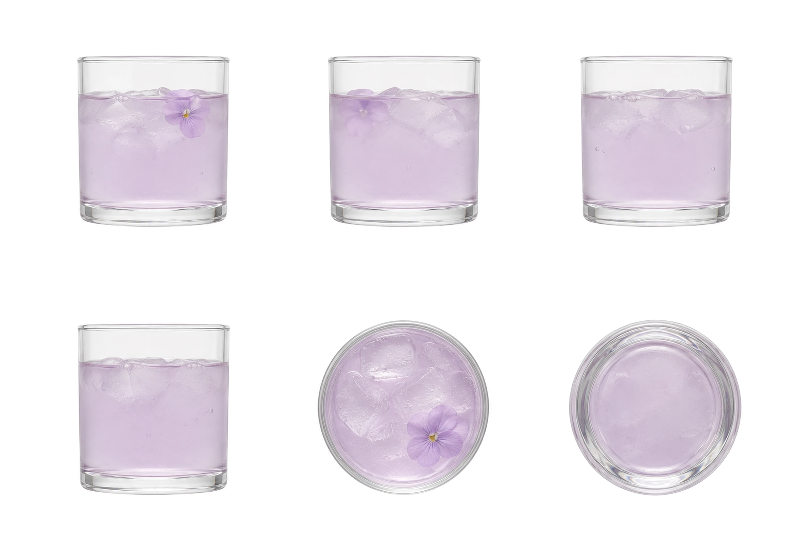
透明果饮杯
浅紫饮品玻璃杯，少量冰块。 柜台收到后举杯观察，与露珠特写匹配切。 成片未完整展示的方位按可见造型补全。
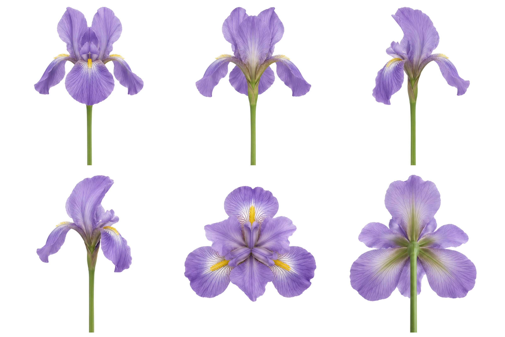
紫色鸢尾
长细叶、深浅不匀的鸢尾花瓣。 街角花槽与结尾产品同框，单花做微距。 成片未完整展示的方位按可见造型补全。
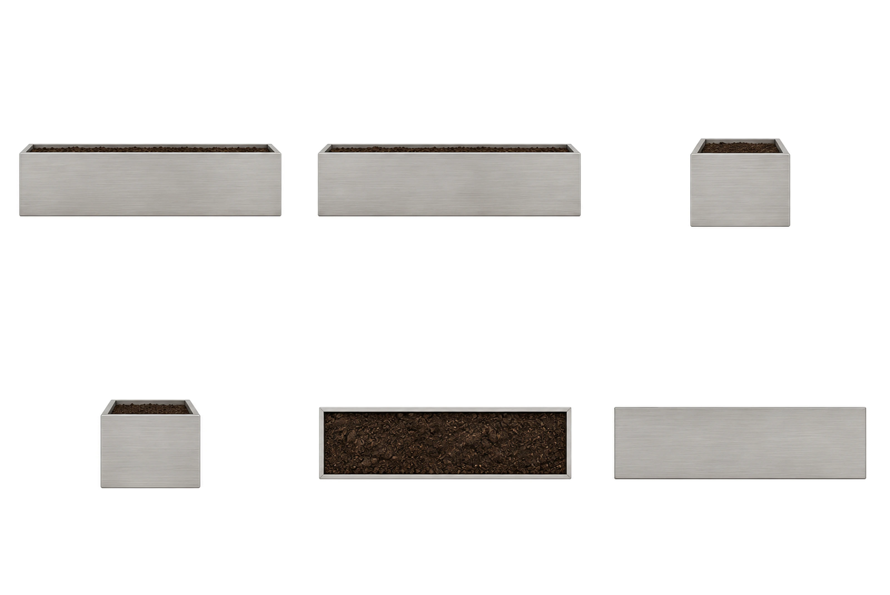
银灰窄花槽
拉丝银灰矩形花槽，平直横向。 沿石墙布置作为街角空间定位。 成片未完整展示的方位按可见造型补全。
剧本与分镜
完整剧本与分镜脚本
带货种草 · 耳机 原片时长 42.68 秒 故事梗概 短发女主经过黑白调的喧闹路口，开盒戴上紫色耳塞，场景恢复色彩。她到临街柜台取饮，沿石墙花槽缓步前行。紫色鸢尾、发夹与耳机构成同色叙事，最后给产品定格。 人物 女主贯穿全片。两位斑马线路人与柜台店员提供都市动作和日常交接。 场景 都市斑马线建立拥挤节奏。临街柜台承担拿杯动作。紫花石墙街角负责观察和收尾过渡。 道具用途 耳机盒和单耳塞分别承担开盒和佩戴。发夹、饮品、鸢尾和花槽以紫色贯通多个机位。 剧本与分镜 按原片抽帧重建的复拍制作稿。画面未能确认的对白、音效与镜头节奏按下表执行。 | 镜号 | 画面内容 | 镜头视角 | 使用资产 | 动作描述 | 台词/旁白 | 音效 | 单镜头时长 | | 01 | 多向斑马线与鞋底交叉 | 高位俯拍切贴地运动 | 都市斑马线、路人 | 先给交叉交通，再用急促鞋步推进 | — | 车流、脚步 | 4.50秒 | | 02 | 女主停在路口看向手中 | 中近景 | 紫衣短发女主、紫花发夹、紫色耳机盒 | 抬起紫盒，等待开盖 | — | 嘈杂声稍降 | 2.90秒 | | 03 | 开盒取耳塞并戴好 | 双手特写到耳边侧近景 | 紫色耳机充电盒、独立紫色耳塞 | 拇指掀盖，取出一只耳塞贴合耳朵 | — | 磁吸扣响，音场切换 | 4.40秒 | | 04 | 城市恢复色彩，路人和飞鸟穿过 | 斑马线中轴全景切女主近景 | 紫衣短发女主、两位路人、都市斑马线 | 女主步速缓下，仰看从楼间飞过的鸟 | — | 明亮音乐、低鸟声 | 7.20秒 | | 05 | 店员递来玻璃杯，女主举杯 | 柜台侧面中景和杯面特写 | 白衣柜台店员、紫衣短发女主、透明果饮杯、临街饮品柜台 | 接杯后抬起，杯中透出浅紫色 | — | 杯触木、冰块 | 5.60秒 | | 06 | 花瓣露珠与玻璃杯匹配切 | 极近微距 | 紫色鸢尾、透明果饮杯 | 从圆形高光切到花瓣露珠 | — | 水珠轻音 | 2.40秒 | | 07 | 紫鞋沿石墙街角前行 | 低位脚部切侧面跟拍与高机位 | 紫衣短发女主、紫花石墙街角、银灰窄花槽 | 鞋跟经过紫色区域，女主慢慢转头 | — | 鞋跟、音乐 | 6.80秒 | | 08 | 花槽和女主的耳侧连续出现 | 花和耳部近景 | 紫色鸢尾、独立紫色耳塞、紫衣短发女主 | 视线移过路旁花朵，耳塞露出 | — | 低音乐 | 6.50秒 | | 09 | 紫色耳机盒与鸢尾定格 | 正面商品近景 | 紫色耳机充电盒、紫色鸢尾 | 以半开盖的正面商品画面收尾 | — | 短提示音 | 2.38秒 | 时长合计 42.68 秒